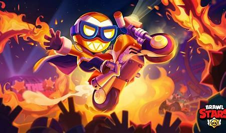
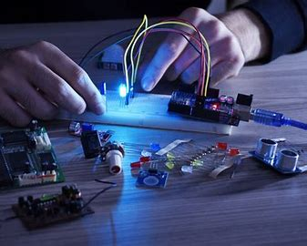
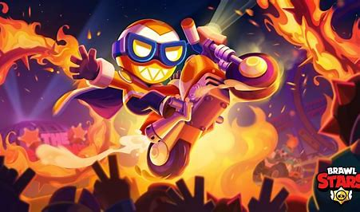
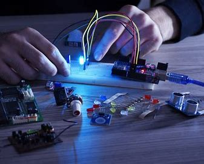

Background
Hi, I'm Jordon Munoz, a first-generation college student majoring in computer engineering at the prestigious Georgia Institute of Technology. I grew up at a small town in Georgia, where my curiosity for how things work led me to explore everything from taking apart a small electronic radio to learning basic Python syntax. Now, at Georgia Tech, I'm making dreams into reality, surrounded by cutting edge technology. As a boy from a small town in Georgia, I never would have imagined having access to such opportunities, so this is truly a great chance for me.
In addition to my studies, my hobbies include day trading in the stock market, soccer, Brawl Stars(mobile game), finding engnieering projects to do. Day trading in the stock market, for instance, has taught me how to analyze data, handle risk, and make quick decisions. I have learned a far more disciplined way of comprehending market behavior-one which aptly supports the analytical skills that I apply in engineering-through following trends and technical analysis. Another great influence in my life is soccer because it keeps me physically fit and develops my strategic thinking and teamwork-a concept useful in collaboration for engineering projects. I also enjoy engineering-based side projects, such as designing a circuit or building small applications that allow me to see some real-world uses of the theories that I am learning. Even playing Brawl Stars, a strategic mobile game, has its benefits; first and foremost, it is fun because this is how I relieve my stress, and it also tests my brain on what moves I would need to make so it would be useful in solving problems.
Inspirational Quote: " I think. Therefore, I am" - René Descartes'
 



“Brawl Stars.” Supercell, supercell.com/en/games/brawlstars/. Accessed 12 Nov. 2024.
“Stock Market”, https://www.shutterstock.com/search/pricing strategy Accessed 12 Nov. 2024.
"Electronics",https://en.wikipedia.org/wiki/Electronics Accessed 12 Nov. 2024.